One of the most interesting problems in natural convection is whether or not buoyancy forces lead to flow. In addition to much work on the analogous single fluid heat transfer problem (see, for example, Busse 1978; Chandrasekhar 1981, ch. 2), there have been studies on isothermal (Sparrow et al. 1985; Suehrcke & Harris 1995; Suehrcke et al. 1996) and heated (Olson & Rosenberger 1979; Abernathy & Rosenberger 1981) gas-vapour mixtures. A still greater variety of phenomena is displayed by liquid mixtures, for which the Schmidt number is typically much larger than the Prandtl number (Turner 1973, pp. 251-9; 1974, 1985; Griffiths, R. W. 1979).
In contrast to these studies, where the imposed density gradient is typically parallel or antiparallel to the gravitational field, the above (§2.5) compositional and thermal boundary conditions mean that they are perpendicular. This always leads to flow; i.e. 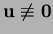.
Taking the curl of the equation of motion (2.54)
and setting the velocity to zero gives:
| 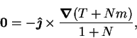 | (2.93) |
To see how there can be a flow at  , consider the vapour transport
analog of Patterson and Imberger's (1980) cavity suddenly
heated from the side. The fluid is initially isothermal and uniform, and then
the temperature and vapour mass fraction at one vertical wall are suddenly
raised and lowered, respectively. The different diffusivities of temperature
and species, inversely proportional to the Prandtl and Schmidt numbers,
respectively, mean that the thermal and solutal disturbances propagate
at different rates (conduction and diffusion must precede convection).
Assume, for definiteness, properties appropriate for air-water vapour:
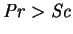 and 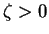.
After a short time, the layer of desiccated air will be thicker
than the layer of heated air, and the concentration gradients less than the
temperature gradients. The outer isothermal desiccated air will be heavier
than the still uniform air, further out, and so it will begin to fall.
The inner heated desiccated air will be
somewhat buoyed up by the thermal expansion and so fall less slowly (or even
rise if the Prandtl number is sufficiently greater than the Schmidt number).
There is,
therefore, a nonzero flow, even though
, consider the vapour transport
analog of Patterson and Imberger's (1980) cavity suddenly
heated from the side. The fluid is initially isothermal and uniform, and then
the temperature and vapour mass fraction at one vertical wall are suddenly
raised and lowered, respectively. The different diffusivities of temperature
and species, inversely proportional to the Prandtl and Schmidt numbers,
respectively, mean that the thermal and solutal disturbances propagate
at different rates (conduction and diffusion must precede convection).
Assume, for definiteness, properties appropriate for air-water vapour:
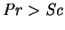 and 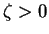.
After a short time, the layer of desiccated air will be thicker
than the layer of heated air, and the concentration gradients less than the
temperature gradients. The outer isothermal desiccated air will be heavier
than the still uniform air, further out, and so it will begin to fall.
The inner heated desiccated air will be
somewhat buoyed up by the thermal expansion and so fall less slowly (or even
rise if the Prandtl number is sufficiently greater than the Schmidt number).
There is,
therefore, a nonzero flow, even though  . The establishment of a
nonzero steady flow from this initial condition is probably not impossible.
Numerical solutions of this problem were obtained by
Lin et al. (1990; reviewed in
§3.3.11), but not for
. The establishment of a
nonzero steady flow from this initial condition is probably not impossible.
Numerical solutions of this problem were obtained by
Lin et al. (1990; reviewed in
§3.3.11), but not for  . The stability of the
hydrostatic solution at
. The stability of the
hydrostatic solution at  was considered by Gobin and Bennacer (1994)
for zero mass transfer rate factor; though their problem
seems rather artificial, since surely non-Boussinesq effects (property
variations) or imperfections in the boundary conditions
would prevent the required perfect balancing of the opposing
buoyancy forces.
was considered by Gobin and Bennacer (1994)
for zero mass transfer rate factor; though their problem
seems rather artificial, since surely non-Boussinesq effects (property
variations) or imperfections in the boundary conditions
would prevent the required perfect balancing of the opposing
buoyancy forces.
Hydrostatic solutions can be completely ruled out
when the mass transfer rate factor,  , is finite.
The transpiration boundary condition
(2.59) would require
the normal derivative of
, is finite.
The transpiration boundary condition
(2.59) would require
the normal derivative of  to vanish at the mass transfer interfaces.
If the domain's boundary consists of mass transfer interfaces and impermeable
surfaces, then a hydrostatic solution would require that
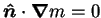
everywhere on the boundary. Further, when
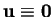, the species
equation (2.53) reduces to Laplace's equation. It is well known
that the only harmonic functions whose normal derivatives vanish over the
entire boundary of a domain are constants (Lamb 1932, p. 41).
This is clearly inconsistent
with the imposed mass fraction difference,
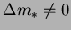,
so that hydrostatic solutions are indeed impossible.
to vanish at the mass transfer interfaces.
If the domain's boundary consists of mass transfer interfaces and impermeable
surfaces, then a hydrostatic solution would require that
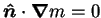
everywhere on the boundary. Further, when
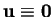, the species
equation (2.53) reduces to Laplace's equation. It is well known
that the only harmonic functions whose normal derivatives vanish over the
entire boundary of a domain are constants (Lamb 1932, p. 41).
This is clearly inconsistent
with the imposed mass fraction difference,
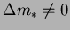,
so that hydrostatic solutions are indeed impossible.
This is to be contrasted with the situation
for infinite horizontal layers (Pellew & Southwell 1940),
or closed cylinders (Charlson & Sani 1970, 1971)
filled with single fluids,
or impermeable enclosures filled with gas-vapour mixtures
(Olson & Rosenberger 1979; Abernathy & Rosenberger 1981)
where there do exist hydrostatic solutions for all values of
 ,
if the imposed temperature gradient is vertical.
,
if the imposed temperature gradient is vertical.